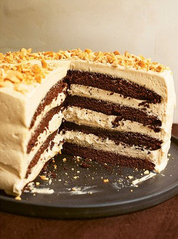

Pancakes

Description
This is a recipe for making pancakes
Ingredients
For the cake:
- 200 grams unsalted butter plus more for greasing
- 250 millilitres hot water from a just-boiled kettle
- 50 grams cocoa
- 100 grams soft dark brown sugar
- 125 grams caster sugar
- 2 teaspoons vanilla extract
- 1 teaspoon baking powder
- 225 grams plain flour
- ½ teaspoon bicarbonate of soda
- 2 large eggs at room temperature
For the icing:
- 300 grams icing sugar
- 150 grams soft unsalted butter
-
200 grams smooth peanut butter (the normal commercial, mass-produced peanut
butter - not a health-store variety)
- 1 teaspoon vanilla extract
- ¼ teaspoon fine sea salt
- 4 x 15ml tablespoons double cream
Steps
-
Heat the oven to 180℃/160℃ Fan/350°F. Butter two 20cm / 8 inch sandwich tins
(or four tier-cake tins) and line them with baking parchment. Don’t use
loose-bottomed tins as this is a runny batter.
-
Cut the butter lengthways into four pieces (just to aid melting) and put
into a heavy-based fairly wide saucepan – I use one of 22cm / 9 inches
diameter – and set over gentle heat. Add the just-boiled water, and whisk in
the cocoa and both brown and white sugars, and keep on low heat, whisking
gently, until the butter has melted, and you have a smooth, amalgamated
mixture. Remove from the heat, and stir in the vanilla extract. Let stand
for 5 minutes.
-
Measure out the flour in a bowl, add the baking powder and bicarbonate of
soda and fork to mix. Whisk the eggs together in a small jug.
-
Pour the eggs gradually into the pan, whisking all the while, until they are
completely absorbed.
-
Finally, whisk in the flour slowly and gently until you have a smooth
batter, and pour and scrape evenly into your waiting tins.
-
Bake in the oven for 18–20 minutes (or approx. 7 minutes for the
ultra-shallow tins), by which time the cakes will be beginning to shrink
away at the edges, and a cake tester will come out cleanish; it is a damp
cake, though, so it’s fine if a few crumbs cling to the cake tester.
-
Leave the cakes to cool for 10–15 minutes on a rack; they can be turned out
once the tins are not so hot that you’d need to use oven gloves. Or you can
leave them in their tins until cold. I always do this if making the
four-tier variant.
-
To make the buttercream, you must first sift the icing sugar into a bowl.
This is one of the few jobs in the kitchen I hate, so I wouldn’t tell you to
do it if it weren’t necessary.
-
In another – large – bowl (or the bowl of a freestanding mixer that you’ve
fitted with the whisk), beat the butter and peanut butter together very
thoroughly; that’s to say, for 3 minutes if you’re using a mixer, or 5
minutes with a handheld electric whisk, by which time you should have a
light and fluffy creamy mixture. Beat in the vanilla extract and salt.
-
Still beating, but now at a slightly lower speed, patiently add the sifted
icing sugar a spoonful at a time until you’ve used half of it, then beat in
the rest in 3 batches. Once it’s all in, turn up the mixer a little and
carry on beating for 2 minutes, or for 3 with a handheld electric whisk.
Scrape down the sides, to incorporate any icing sugar clinging to the bowl,
and beat again for 30 seconds to 1 minute.
-
Still beating, add the cream a tablespoonful at a time and, when it’s all
in, carry on beating for 4 minutes (or for 6 minutes with a handheld
electric whisk) until you have a soft, aerated and moussily light mixture.
-
Peel away the lining papers from the cakes and place one of the layers,
flat-side up, on a cake stand or plate. If this is a 2-layer cake, spread –
armed, ideally, with a bendy spatula and a small offset spatula – about a
third of the icing evenly onto the waiting cake layer, taking it right out
to the very edges of the circle; this will bulge out a bit when you place
the other cake on top, which will make it easier for you to ice the sides.
And if this is a 4-layer cake, just think in terms of spreading the icing
1cm / ¼ inch thick.
-
Top with your second cake, placing it domed-side up, so that the two flat
sides are meeting. Then spread another third of the icing over the top. And
if making a 4-layer cake, create your tower, spreading 1cm / ¼ inch
thickness of icing between each layer, and on the top.
-
Use the bendy spatula to get a dollop of buttercream onto the side of the
cake, then spread it gently to cover and smooth, ideally with a small offset
spatula, and carry on like this, with your two tools, until the cake is
covered all the way round. Then run the offset spatula on top and all round
the cake again to smooth the buttercream. Leave plain or decorate with the
chopped peanuts or as your heart desires.